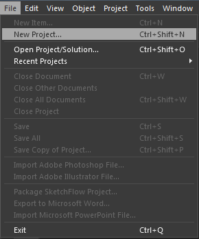
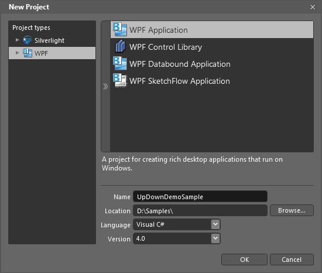
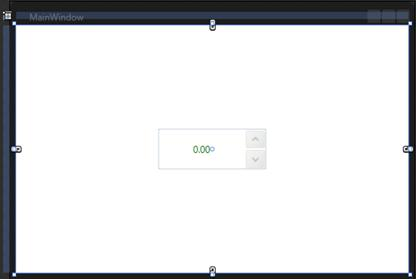

To create UpDown in Expression Blend:
1. Open Expression Blend.
On the File menu, select New Project. The New Project dialog box opens.

Figure 1154: File Menu
In the Project types pane, select WPF, and then from the options displayed, select WPF Application.
In the Name field, type a name for the project, and then click OK.

New Figure 1155:Project Dialog Box
On the Window menu, select Assets. The Assets Library dialog box opens.
In the Search box, type UpDown. The search results are displayed.
Drag the UpDown control to Design View. An instance of the UpDown control is created.

Figure 1156: UpDown Control in Design View